W oknie Network Settings przechodzimy do zakładki Routing i w sekcji Routing Table dodajemy trase.Wpisujemy adres IP bramy domyślnej i nazwa urządzenia, czyli karty sieciowejPo dodaniu trasy widzimy ją w tabeli
2.1.2 Zmiana nazwy serwera
W oknie Network Settings przechodzimy do Hostname/DNS i wpisujemy statyczną nazwę hosta
2.1.3 Wyłączenie interfejsu
Przejdź do edycji ustawień interfejsu, następnie do zakładki General i w sekcji Device Activation zmień opcję Activate Device na Never
2.2 Serwer HTTP
Nazwa usługi: apache2
Nazwa pakietu: yast2-http-server
Domyślny właściciel: wwwrun
Grupa właściciela: www
ﴘ Domyślny numer portu: 80 (TCP)
Katalog do plików konfiguracyjnych: /etc/apache2
Użytkownik anonimowy - każdy kto chce skorzystać z serwera nie mając przy tym swojego konta. Zazwyczaj można się połączyć anonimowo korzystając z login’u: anonymous lub wybierając odpowiednie ustawienie/przełącznik.
Użytkownik uwierzytelniony - posiada własne konto w naszym serwerze.
2.3.2.2 Umask
Tworzymy przez negację właściwych uprawnień.
Składa się z 4 pól uprawnień:
_specjalne (zawsze 0)
_właściciel
_grupa do której należy właściciel
_inni użytkownicy
Jeżeli odczyt to r i x (żeby wejść do katalogu).
Wartości dla uprawnień:
r - read - odczyt - 4
w - write - zapis - 2
x - execute - uruchomienie - 1
2.3.2.2.1 Przykład 1.
Sam odczyt dla wszystkich, czyli read i execute.
4 (read) + 1 (execute) = 5 7 - 5 = 2
Składamy w całość: 0222
2.3.2.2.2 Przykład 2.
Odczyt, zapis i uruchomienie dla wszystkich, czyli read, write i execute.
4 (read) + 2 (write) + 1 (execute) = 7 7 - 7 = 0
Składamy w całość: 0000
2.3.2.3 Łączenie się / testowanie serwera FTP
Program PuTTY - umożliwia połączenie się z innym hostem (za pomocą protokołów telnet, ssh, ftp itp.). W przypadku FTP będziemy korzystać z narzędzia psftp (które wchodzi w skład PuTTY). Aby pobrać PuTTYkliknij tutaj
Sposoby na połączenie się z serwerem FTP: - Przeglądarka Internet Explorer - Narzędzia ftp w wierszu poleceń - Eksplorator plików - Filezilla lub PuTTY
2.3.3 Konfiguracja serwera
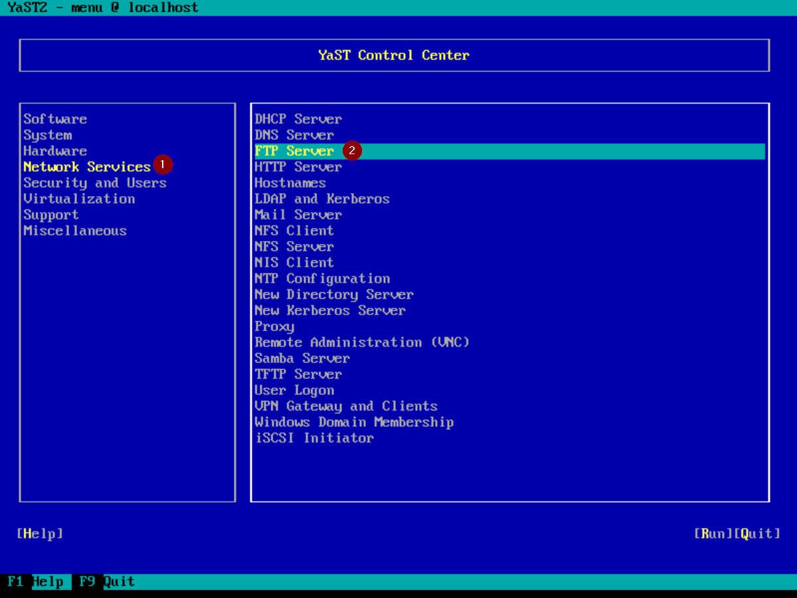Przejdź do konfiguarcji serwera.
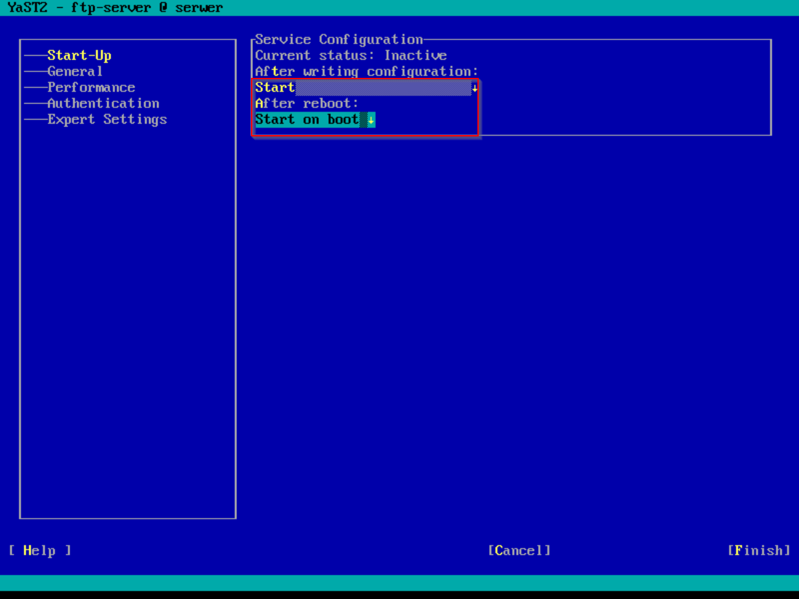W zakładce Start-up zmień ustawienia uruchamiania serwera.
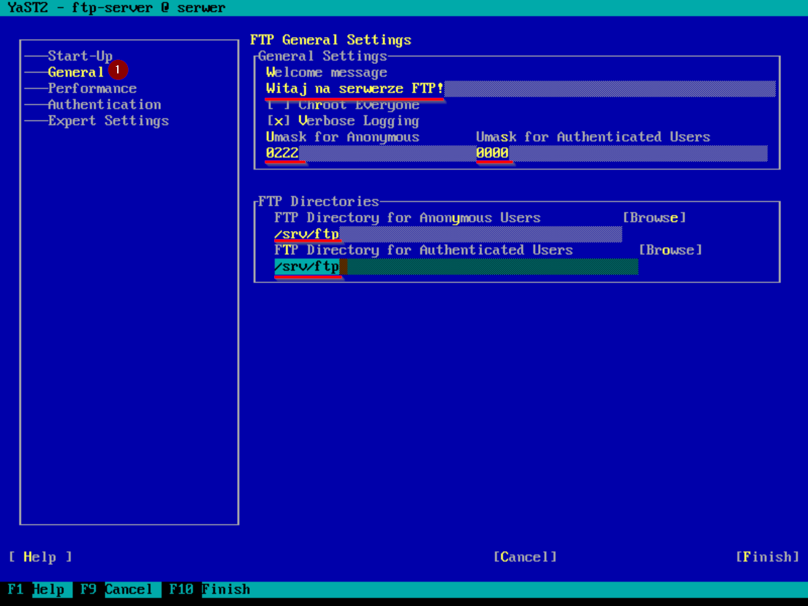W zakładce General ustaw wiadomość powitalną, zmień uprawnienia umask dla użytkowników anonimowych i uwierzytelnionych oraz podaj ścieżkę do katalogów.
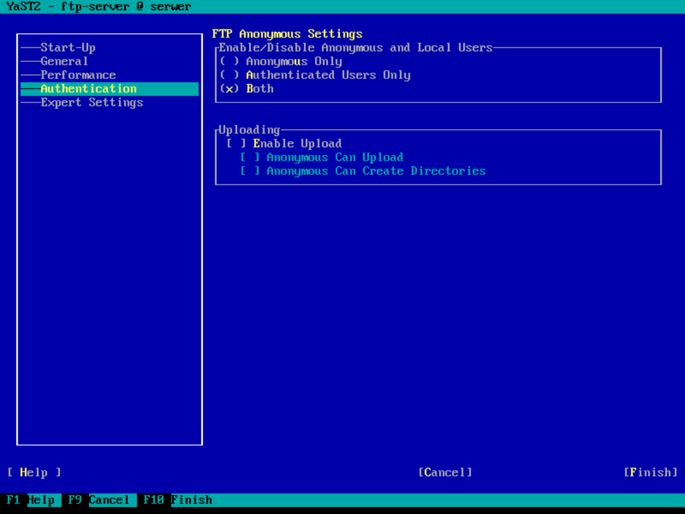W zależności od zadania zmień ustawienia kto może używać serwera i czy anonimowi mogą przesyłać. W tym przypadku nic nie zmieniam.
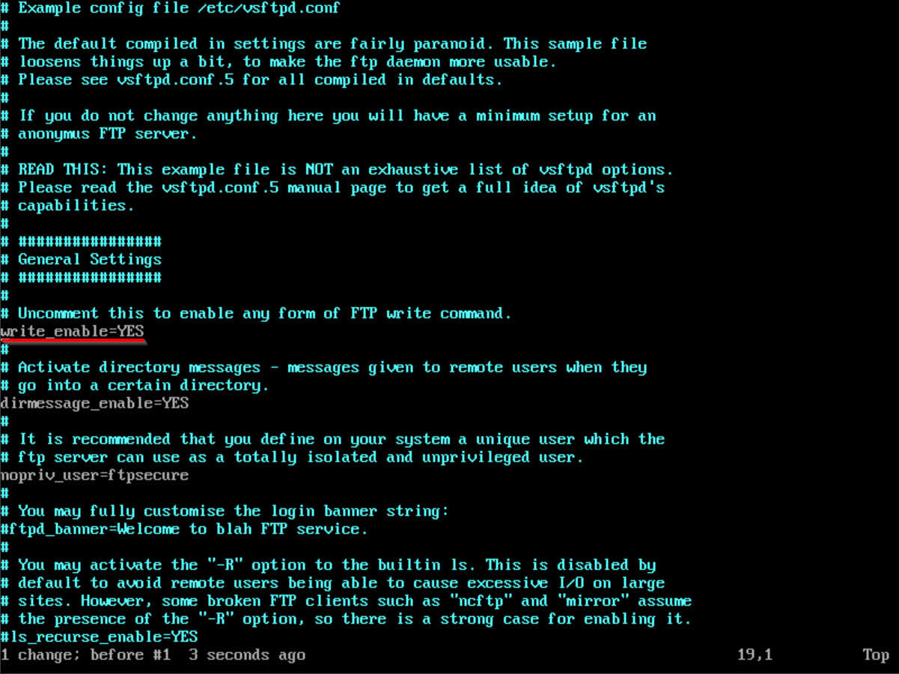Ustaw opcję write_enable na true w pliku /etc/vsftpd.conf (tę konkretną opcję znajdziesz na 19 linii)
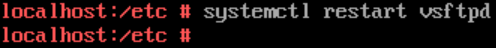Zrestartuj serwer FTP.
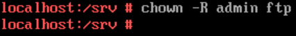Zmień właściciela do katalogu serwera i jego plików (tym którego ścieżkę podaliśmy w poprzednim kroku), domyślnie będzie to /srv/ftp. Skorzystaj z przełącznika -R.
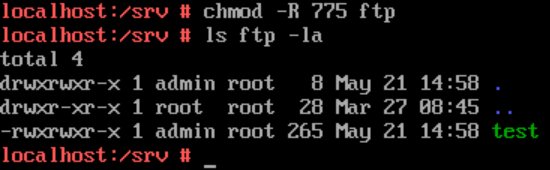Ustaw odpowiednie uprawnienia zarówno dla katalogu jaki plików wewnątrz. W tym celu skorzystaj z przełącznika -R.
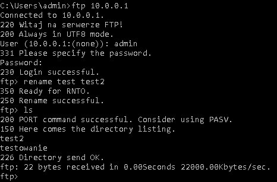Sprawdź działanie serwera na kliencie za pomocą polecenia ftp
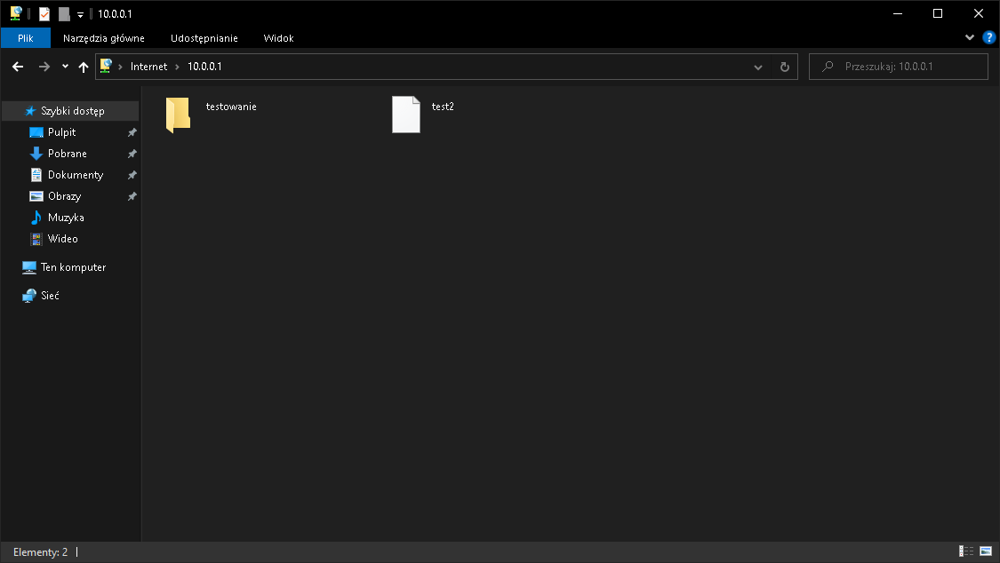To samo możesz zrobić w Eksploratorze Plików
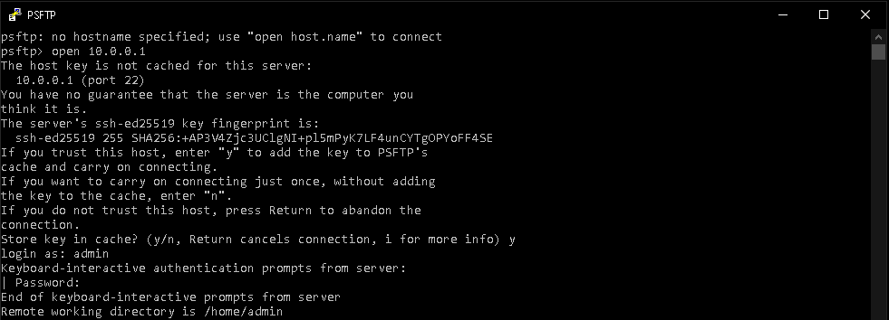Lub w PuTTY - PSFTP
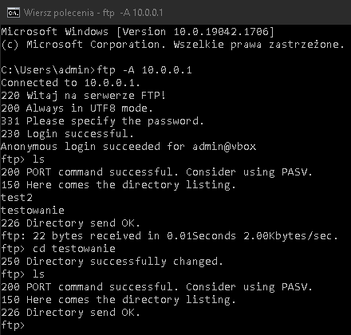Pamiętaj, żeby sprawdzić też połączenie jako użytkownik anonimowy
Przed nauką konfiguracji serwera DNS warto nauczyć się teorii, zestaw fiszek programu Anki: kliknij tutaj.
Dla przypomnienia:
strefa wyszukiwania w przód - example.com -> 192.168.1.1
strefa wyszukiwania w tył - 192.168.1.1 -> example.com
rekord A to nazwa na IPv4 - example.com -> 192.168.1.1
rekord NS - identyfikuje serwer nazw
rekord CNAME - przechowuje alias, który pozwala na przypisaniu wielu rekordów do tego samego hosta.
Tworzenie nazwy strefy wyszukiwania w przód polega na odwróceniu adresu sieci i dodaniu in-addr.arpa na końcu. Na przykład:
Adres sieci: 10.0.0.0
Nazwa strefy: 0.0.10.in-addr.arpa
Do testowania użyj polecenia nslookup (na Linuxie i Windows’ie) lub dig (na Linux’ie).
2.4.2 Konfiguracja serwera
Przejdź do konfiguracji serwera DNSPodaj listę hostów do których przekazywane będą zapytania, w tym przypadku będzie to tylko lokalny serwerTworzymy nową strefę podstawową (Master) wyszukiwania w przódWybieramy EditDodajemy nowy rekord NS, który zawiera nazwę domeny z kropką na końcuDodajemy nowy rekord A na całą domenęDodajemy pozostałe rekordyZmieniamy ustawienia uruchamiania serwera i przechodzimy do zaawansowanej konfiguracjiPrzechodzimy do zakładki DNS Zones i dodajemy nową strefę, tym razem wyszukiwania w tyłW edytorze strefy zaznaczamy opcję Automatically Generate Records From i wybieramy strefę wyszukiwania w przód (w tym przypadku mamy tylko jedną, więc wybrała się od razu)Dodajemy rekord NS, w strefie wyszukiwania w tył tak samo jak w strefie wyszukiwania w przód
2.4.3 Testowanie serwera
Sprawdzam strefę wyszukiwania w przód na serwerzeNastępnie sprawdzam strefę wyszukiwania w tyłSprawdzam działanie serwera na kliencieI na koniec wyszukiwanie w tył
-r - kopiuje/wysyła wszystkie pliki wewnątrz danego katalogu.
Zamiast adresu serwera możemy też podać _nazwę hosta.
_Przykład 1.
scp admin@10.0.0.1:/etc/os-release wersja_systemu
Skopiuje to plik /etc/os-release z serwera do pliku wersja_systemu na kliencie. 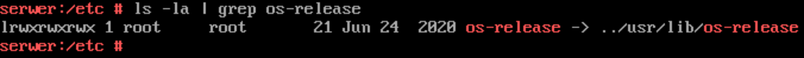
_Przykład 2.
scp test admin@10.0.0.1:test2
Wysyłamy plik test z klienta do pliku test2 na serwerze. 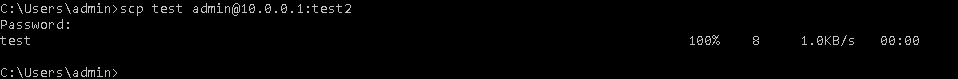 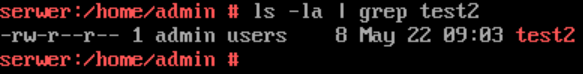
3.1.2 Połączenie przez sftp
Oprócz scp możemy połączyć się przez SFTP - Secure File Transfer Protocol (TCP 22). Wtedy obowiązują nas komendy tj. w zwykłym ftp, czyli get (pobieranie z serwera) lub put (wysyłanie do serwera).
ustaw właściciela utworzonego katalogu i pliku na użytkownika i grupę na uprawnieniach, na których działa serwer HTTP.
skonfiguruj serwer HTTP tak, aby główna witryna udostępniała zawartość /stronawww.
Na stacji roboczej zainstaluj drukarkę sieciową na lokalnym porcie TCP/IP. Adres IP drukarki 192.168.0.200.
Utwórz plik tekstowy zawierający twój numer stanowiska egzaminacyjnego i twój numer PESEL, wydrukuj go na drukarce. Dołącz wydruk arkusza egzaminacyjnego potwierdzając prawidłową instalację drukarki.
Na stacji roboczej na pulpicie użytkownika Administrator znajdują się wyniki testowania pamięci RAM. Na ich podstawie uzupełnij tabelę:
RAM 1
Typ pamięci
__________________
Slot
__________________
Przepustowość [MB/s]
__________________
Częstotliwość
__________________
RAM 1
Typ pamięci
Slot
Przepustowość [MB/s]
Częstotliwość
Na stacji roboczej sprawdź czy wyświetla się udostępniona witryna.
Czas przeznaczony na wykonanie zadania wynosi 150 min.
Ocenie podlegać będą 4 rezultaty:
wykonane okablowanie sieciowe i połączenie fizyczne urządzeń,
skonfigurowane urządzenia sieciowe
skonfigurowane interfejsy sieciowe serwera i stacji roboczej
skonfigurowany serwer sieci Web i połączenie z drukarką sieciową.
przebieg wykonania kabla połączeniowego i połączenia urządzeń.
Aby dostać się do urządzenia podłączam go do stacji i konfiguruje automatyczne pobieranie adresu IP (domyślnie DHCP jest włączony na routerze). Następnie wchodzę do konfiguracji przy użyciu przeglądarki, adres IP to 192.168.1.1.
Obsługa standardu 802.1Q (dot1Q) jest już domyślnie włączona.
Jako, że VLAN 1 jest domyślnym VLAN’em, a utworzenie VLAN 2 jest niemożliwe zamienimy ID na kolejno 10 i 20. W celu ich utworzenia kierujemy się do Networking>LAN>LAN configuration i tworzymy odpowiednie VLAN’y. Następnie wykluczam domyślny VLAN 1 ze wszystkich portów oprócz ostatniego (ewentualnie jako furtka gdyby coś poszło nie tak).
Zmieniam adresy IP dla poszczególnych VLAN’ów. Pamiętaj, że po każdej zmianie adresów router będzie chciał się zrestartować, w razie potrzeby zmień adres IP na komputerze lub odśwież go (ipconfig /release i ipconfig /renew).
Dla VLAN 1 ustawiam wybrany adres (inny niż dla VLAN 1 i VLAN 2, w tym przypadku wybrałem 5). Zostawiam sobie serwer DHCP.
Dla VLAN 10 ustawiam adres 192.168.0.1 z prefiksem /24. Zgodnie z poleceniem wyłączam serwer DHCP.
Dla VLAN 20 ustawiam adres 192.168.1.1 z prefiksem /24. Konfiguruje również serwer DHCP, adres początkowy zostaje niezmieniony, natomiast maksymalna liczba użytkowników zostaje zmieniona na 51 (o jeden większa niż różnica 150 i 100, jeżeli zapomnisz jak to działa na egzaminie zawsze możesz sprawdzić ustawioną pulę po zapisaniu ustawień). Ustawiam też adres serwera DNS na adres serwera, czyli 192.168.0.200.
Teraz zostaje nam włączenie routowania między VLAN’ami, czyli Inter-VLAN routing. Rozwiązanie, które tutaj tworzymy to tzw. router na patyku (więcej informacji znajdziesz tutaj).
Przełącznik domyślnie ma adres 192.168.1.254/24, więc musimy na stacji ustawić adres w tej podsieci (np. 192.168.1.1/24).
Po wejściu na przełącznik i zmianie hasła, przechodzimy do VLAN Management>Create VLAN.
Następnie tworzymy VLAN’y 10 i 20.
Teraz pora zmienić domyślny VLAN na 10, poprzez VLAN management>Default VLAN settings.
Następnie przypisujemy VLAN’y do interfejsów.
zmieniliśmy domyślny VLAN, dlatego VLAN 1 nie jest już przypisany do żadnego portu.
VLAN 10 przypisuje do portu g1(nie tagowany - Untagged) i portu g3 (tagowany - Tagged).
VLAN 20 przypisuje do portu g2(nie tagowany - Untagged) i portu g3 (tagowany - Tagged).
W ustawieniach interfejsów (VLAN Management>Interface settings) zmieniamy typy interfejsów g1 i g2 na access (tryb dostępu, jeden VLAN na jednym porcie) i g3 na trunk (wiele VLAN’ów na jednym porcie).
4.4 Konfiguracja komputerów
4.4.1 Konfiguracja serwera
Zaczynam od konfiguracji serwera, otwieram Yast’a i przechodzę do System i Network Settings.
Wybieram interfejs i klikam Edit (F4).
Wpisuje statyczny adres IP: 192.168.0.200 (powinno być 201 🙂) i podaje hostname: serwer.
Przechodzę do zakładki General i zmieniam nazwę interfejsu na VLAN1, zapisuje ustawienia interfejsu klikając F10.
Przechodzę do zakładki Hostname/DNS i upewniam się, że hostname jest ustawiony oraz, że serwer DNS to localhost, czyli 127.0.0.1.
W zakładce Routing dodaje nową trasę domyślną, czyli adres bramy domyślnej (routera) - 192.168.0.1, podaje też nazwę interfejsu - VLAN1.
4.4.2 Konfiguracja klienta
Zmieniam ustawienia karty sieciowej na automatyczne pobieranie adresu IP i adresu serwera DNS.
4.5 Testowanie połączeń
Serwer -> Router (VLAN 1)
Serwer -> Router (VLAN 2)
Serwer -> Klient
Serwer -> Przełącznik
Klient -> Router (VLAN 1)!
Klient -> Serwer
4.6 Konfiguracja serwera HTTP
Jeżeli ćwiczysz instalacje serwera HTTP w wirtualnej maszynie, to może się zdarzyć, że pomimo wybrania usługi HTTP podczas instalacji usługa Apache2 jest niezainstalowana. W takim przypadku wystarczy ją zainstalować poleceniem:
sudo zypper install yast2-http-server
Otwieram Yast’a i przechodzę do Network Services>Server HTTP.
Wpisuje niestandardowe porty i interfejsy na których mamy nasłuchiwać, w tym przypadku zostawiam wszystko domyślnie (HTTP działa na porcie TCP 80).
W trzecim kroku kreatora (Default Host) zmieniam ścieżkę do katalogu dokumentu (Document Root i Directory) według zadania, czyli w tym przypadku /stronawww.
Zmieniam ustawienia uruchamiania serwera HTTP.
Tworzę katalog /stronawww, a wewnątrz plik index.html.
Za pomocą dowolnego edytora tekstu zmieniam zawartość pliku, ja wybrałem vim (możesz użyć nano lub mc jeżeli są zainstalowane).
Pozostało nam sprawdzenie działania serwera HTTP na kliencie.